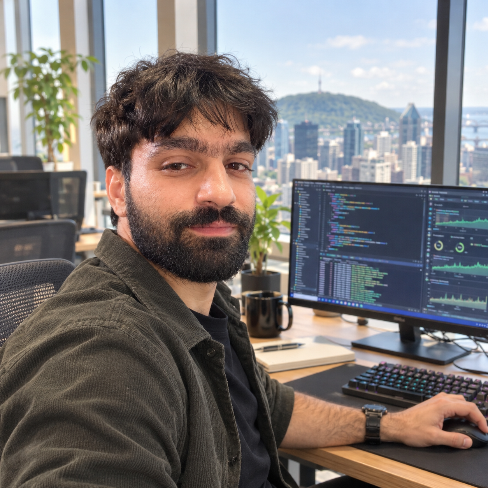

Backend & Systems Engineer, Noida / Delhi NCR. I build backends that run real things, 24/7.
Download CV (PDF)
I've worked in IT since 2011, from Android firmware and desktop support to server uptime, security compliance and web backends.
Today I design and run event-driven services on self-hosted Linux: state machines, REST and webhook integrations, SQL data layers, monitoring and alerts, plus LLM routing and MCP tool access. I debug from data and own systems in production.
Built and run a live, automatic water supply controller with a SQLite event store, Telegram bot and email reports, plus a tested Node.js/Express API for it with GitHub Actions CI. Operate a TrueNAS server with a Home Assistant VM, Docker apps, Frigate CCTV and a multi-provider LLM gateway behind Cloudflare Tunnel, monitored with Prometheus, Grafana and Loki.
Brought the company's down website and servers back online by redeploying a clean, working codebase, and secured the databases against SQL injection flaws.
Managed backend server uptime and upgraded servers to the security compliance standards of the time.
Tested Micromax Canvas Android builds and ported modem and GPS libraries across firmware versions for devices sold in other regions.
Event-driven controller for an unreliable alternate-day municipal supply. Checks for water every 5 minutes, judges flow and quality, runs the pump with safety cut-offs, and logs everything to SQLite. Built on Node-RED, Home Assistant and ESP32.
View Project →A read-only REST API and mobile dashboard for the water system, built with Node.js 22 and Express and packaged as a Docker container running as a Home Assistant app. Serves live sensor states from the Home Assistant API, a daily summary and history charts (server-drawn SVG) from the controller's SQLite database, with optional Basic auth and code that reloads without rebuilding the image. Every change runs an automated test suite and Docker build in GitHub Actions.
View Project →A TrueNAS SCALE server running a Home Assistant VM and Docker apps, with remote access through Cloudflare Tunnel. Six IP cameras feed Frigate over RTSP. One multi-provider LLM gateway (FreeLLMAPI) serves Home Assistant Assist, a Telegram bot and Open WebUI with a single API key, and the AI backend has been swapped three times without touching the apps that use it. An observability stack runs alongside as one Docker Compose app: Prometheus scrapes the server and every Home Assistant sensor, Grafana Alloy ships all container and host logs to Loki, and a Grafana dashboard tracks the water system live; Mosquitto provides an authenticated MQTT broker.
View Stack →A library book-record management app built in C# / .NET (Visual Studio solution), with in-memory data storage.
View Project →Vanier College, Montréal, Canada (2021 - 2023)
K.R. Mangalam University, Gurugram, India (2014 - 2017)